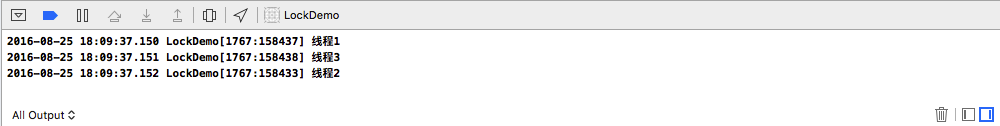
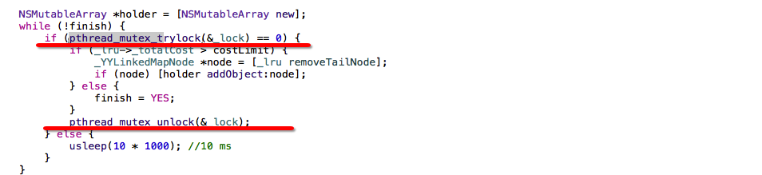

我们在使用多线程的时候多个线程可能会访问同一块资源，这样就很容易引发数据错乱和数据安全等问题，这时候就需要我们保证每次只有一个线程访问这一块资源，锁 应运而生。
补充:实现锁的多种方式和锁的高级用法
iOS中保证线程安全的几种方式与性能对比
一、OSSpinLock 自旋锁
OSSpinLock 自旋锁，性能最高的锁。在任何时刻只会有一个线程能获得锁,而其他线程忙着等待直到获得锁。缺点是spinlock使用不当(如临界区执行时间过长)会导致cpu busy飙高。不适合较长时间任务
__block OSSpinLock theLock = OS_SPINLOCK_INIT;
dispatch_async(dispatch_get_global_queue(DISPATCH_QUEUE_PRIORITY_DEFAULT, 0), ^{
OSSpinLockLock(&theLock);
NSLog(@"需要线程同步的操作1 开始");
sleep(3);
NSLog(@"需要线程同步的操作1 结束");
OSSpinLockUnlock(&theLock);
});
dispatch_async(dispatch_get_global_queue(DISPATCH_QUEUE_PRIORITY_DEFAULT, 0), ^{
OSSpinLockLock(&theLock);
sleep(1);
NSLog(@"需要线程同步的操作2");
OSSpinLockUnlock(&theLock);
});
//
OS_SPINLOCK_INIT： 默认值为 0,在 locked 状态时就会大于 0，unlocked状态下为 0
OSSpinLockLock(&oslock)：上锁，参数为 OSSpinLock 地址
OSSpinLockUnlock(&oslock)：解锁，参数为 OSSpinLock 地址
OSSpinLockTry(&oslock)：尝试加锁，可以加锁则立即加锁并返回 YES,反之返回 NO
/**
当前线程锁失败，也可以继续其它任务，用 trylock 合适
当前线程只有锁成功后，才会做一些有意义的工作，那就 lock，没必要轮询 trylock
*/
注意:
不再安全的 OSSpinLock
二、dispatch_semaphore 信号量
是GCD的用来同步的一种方式
在没有等待情况出现时，它的性能比pthread_mutex还要高，但一旦有等待情况出现时，性能就会下降许多。相对于OSSpinLock来说，它的优势在于等待时不会消耗CPU资源。
dispatch_semaphore_t signal = dispatch_semaphore_create(1);
dispatch_time_t overTime = dispatch_time(DISPATCH_TIME_NOW, 3 * NSEC_PER_SEC);
dispatch_async(dispatch_get_global_queue(DISPATCH_QUEUE_PRIORITY_DEFAULT, 0), ^{
dispatch_semaphore_wait(signal, overTime);
NSLog(@"需要线程同步的操作1 开始");
sleep(2);
NSLog(@"需要线程同步的操作1 结束");
dispatch_semaphore_signal(signal);
});
dispatch_async(dispatch_get_global_queue(DISPATCH_QUEUE_PRIORITY_DEFAULT, 0), ^{
sleep(1);
dispatch_semaphore_wait(signal, overTime);
NSLog(@"需要线程同步的操作2");
dispatch_semaphore_signal(signal);
});
dispatch_semaphore_create(1)： 传入值必须 >=0, 若传入为 0 则阻塞线程并等待timeout,
时间到后会执行其后的语句
dispatch_semaphore_wait(signal, overTime)：可以理解为 lock,会使得 signal 值 -1，若信号量的值大于0，就可以继续往下执行,否则等待,如果在等待时间期间信号量一直为0，则会在`timeOut`后自动执行其后的语句。
//
dispatch_semaphore_signal(signal)：可以理解为 unlock,会使得 signal 值 +1
三、@synchronized
NSObject *obj = [[NSObject alloc] init];
dispatch_async(dispatch_get_global_queue(DISPATCH_QUEUE_PRIORITY_DEFAULT, 0), ^{
@synchronized(obj) {
NSLog(@"需要线程同步的操作1 开始");
sleep(3);
NSLog(@"需要线程同步的操作1 结束");
}
});
dispatch_async(dispatch_get_global_queue(DISPATCH_QUEUE_PRIORITY_DEFAULT, 0), ^{
sleep(1);
@synchronized(obj) {
NSLog(@"需要线程同步的操作2");
}
});
@synchronized(obj)指令使用的obj为该锁的唯一标识，只有当标识相同时，才为满足互斥.
@synchronized指令实现锁的优点就是我们不需要在代码中显式的创建锁对象，便可以实现锁的机制，但作为一种预防措施，@synchronized块会隐式的添加一个异常处理例程来保护代码，该处理例程会在异常抛出的时候自动的释放互斥锁。所以如果不想让隐式的异常处理例程带来额外的开销，你可以考虑使用锁对象。
补充：关于 @synchronized，这儿比你想知道的还要多
四、NSLock
NSLock *lock = [[NSLock alloc] init];
dispatch_async(dispatch_get_global_queue(DISPATCH_QUEUE_PRIORITY_DEFAULT, 0), ^{
//[lock lock];
[lock lockBeforeDate:[NSDate date]];
NSLog(@"需要线程同步的操作1 开始");
sleep(2);
NSLog(@"需要线程同步的操作1 结束");
[lock unlock];
});
dispatch_async(dispatch_get_global_queue(DISPATCH_QUEUE_PRIORITY_DEFAULT, 0), ^{
sleep(1);
if ([lock tryLock]) {//尝试获取锁，如果获取不到返回NO，不会阻塞该线程
NSLog(@"锁可用的操作");
[lock unlock];
}else{
NSLog(@"锁不可用的操作");
}
NSDate *date = [[NSDate alloc] initWithTimeIntervalSinceNow:3];
if ([lock lockBeforeDate:date]) {//尝试在未来的3s内获取锁，并阻塞该线程，如果3s内获取不到恢复线程, 返回NO,不会阻塞该线程
NSLog(@"没有超时，获得锁");
[lock unlock];
}else{
NSLog(@"超时，没有获得锁");
}
});
//运行结果
2016-06-29 20:45:08.864 SafeMultiThread[35911:575795] 需要线程同步的操作1 开始
2016-06-29 20:45:09.869 SafeMultiThread[35911:575781] 锁不可用的操作
2016-06-29 20:45:10.869 SafeMultiThread[35911:575795] 需要线程同步的操作1 结束
2016-06-29 20:45:10.870 SafeMultiThread[35911:575781] 没有超时，获得锁
lock一般用于多线程同时访问、修改同一个数据源，保证在同一时间内数据源只被访问、修改一次，其他线程的命令需要在lock外等待，只到unlock，才可访问
NSLock是Cocoa提供给我们最基本的锁对象，这也是我们经常所使用的，除了常使用的lock和unlock方法外,还提供了:
trylock：能加锁返回YES并执行加锁操作，相当于lock，反之返回NO
lockBeforeDate：这个方法表示会在传入的时间内尝试加锁，若能加锁则执行加锁操作并返回YES，反之返回NO
五、NSRecursiveLock递归锁
NSRecursiveLock *lock = [[NSRecursiveLock alloc] init];
dispatch_async(dispatch_get_global_queue(DISPATCH_QUEUE_PRIORITY_DEFAULT, 0), ^{
static void (^RecursiveMethod)(int);
RecursiveMethod = ^(int value) {
[lock lock];
if (value > 0) {
NSLog(@"value = %d", value);
sleep(1);
RecursiveMethod(value - 1);
}
[lock unlock];
};
RecursiveMethod(5);
});
//执行结果
2016-06-30 19:09:41.414 SafeMultiThread[30949:450684] value = 5
2016-06-30 19:09:42.418 SafeMultiThread[30949:450684] value = 4
2016-06-30 19:09:43.419 SafeMultiThread[30949:450684] value = 3
2016-06-30 19:09:44.424 SafeMultiThread[30949:450684] value = 2
2016-06-30 19:09:45.426 SafeMultiThread[30949:450684] value = 1
//在上面如果用NSLock的话就会造成死锁的情况
NSLock *lock = [[NSLock alloc] init];
/**
在我们的线程中，RecursiveMethod是递归调用的。所以每次进入这个block时，都会去加一次
锁，而从第二次开始，由于锁已经被使用了且没有解锁，所以它需要等待锁被解除，这样就导致了死
锁，线程被阻塞住了。
*/
NSRecursiveLock递归锁，可以被同一线程多次请求，而不会引起死锁。这主要是用在循环或递归操作中。
递归锁会跟踪它被lock的次数。每次成功的lock都必须平衡调用unlock操作。只有所有达到这种平衡，锁最后才能被释放，以供其它线程使用。
六、NSConditionLock条件锁
只是lock和unlock通常并不能满足我们的使用，我们通常在满足某条件的情况下才会打开这把锁，这时候我们可以使用NSConditionLock条件锁
NSConditionLock *cLock = [[NSConditionLock alloc] initWithCondition:0];
//线程1
dispatch_async(dispatch_get_global_queue(DISPATCH_QUEUE_PRIORITY_DEFAULT, 0), ^{
if([cLock tryLockWhenCondition:0]){
NSLog(@"线程1");
[cLock unlockWithCondition:1];
}else{
NSLog(@"失败");
}
});
//线程2
dispatch_async(dispatch_get_global_queue(DISPATCH_QUEUE_PRIORITY_DEFAULT, 0), ^{
[cLock lockWhenCondition:3];
NSLog(@"线程2");
[cLock unlockWithCondition:2];
});
//线程3
dispatch_async(dispatch_get_global_queue(DISPATCH_QUEUE_PRIORITY_DEFAULT, 0), ^{
[cLock lockWhenCondition:1];
NSLog(@"线程3");
[cLock unlockWithCondition:3];
});
/**
我们在初始化 NSConditionLock 对象时，给了他的标示为 0
执行 tryLockWhenCondition:时，我们传入的条件标示也是 0,所 以线程1 加锁成功
执行 unlockWithCondition:时，这时候会把condition由 0 修改为 1
因为condition 修改为了 1， 会先走到 线程3，然后 线程3 又将 condition 修改为 3
最后 走了 线程2 的流程
*/

相比于 NSLock 多了个condition参数，我们可以理解为一个条件标示.
我们还用它实现了任务支架你的依赖
//可用功能如下:
- (instancetype)initWithCondition:(NSInteger)condition NS_DESIGNATED_INITIALIZER;
@property (readonly) NSInteger condition;
- (void)lockWhenCondition:(NSInteger)condition;
- (BOOL)tryLock;
- (BOOL)tryLockWhenCondition:(NSInteger)condition;
- (void)unlockWithCondition:(NSInteger)condition;
- (BOOL)lockBeforeDate:(NSDate *)limit;
- (BOOL)lockWhenCondition:(NSInteger)condition beforeDate:(NSDate *)limit;
@property (nullable, copy) NSString *name NS_AVAILABLE(10_5, 2_0);
七、NSCondition
一种最基本的条件锁。手动控制线程wait和signal。
NSCondition *condition = [[NSCondition alloc] init];
NSMutableArray *products = [NSMutableArray array];
dispatch_async(dispatch_get_global_queue(DISPATCH_QUEUE_PRIORITY_DEFAULT, 0), ^{
while (1) {
[condition lock];
if ([products count] == 0) {
NSLog(@"wait for product");
[condition wait];
}
[products removeObjectAtIndex:0];
NSLog(@"custome a product");
[condition unlock];
}
});
dispatch_async(dispatch_get_global_queue(DISPATCH_QUEUE_PRIORITY_DEFAULT, 0), ^{
while (1) {
[condition lock];
[products addObject:[[NSObject alloc] init]];
NSLog(@"produce a product,总量:%zi",products.count);
[condition signal];
[condition unlock];
sleep(1);
}
});
2016-06-30 20:21:25.295 SafeMultiThread[31256:513991] wait for product
2016-06-30 20:21:25.296 SafeMultiThread[31256:513994] produce a product,总量:1
2016-06-30 20:21:25.296 SafeMultiThread[31256:513991] custome a product
[condition lock]一般用于多线程同时访问、修改同一个数据源，保证在同一时间内数据源只被访问、修改一次，其他线程的命令需要在lock 外等待，只到unlock ，才可访问
[condition unlock]与lock 同时使用
[condition wait]让当前线程处于等待状态
[condition signal]CPU发信号告诉线程不用在等待，可以继续执行
- (void)wait;//进入等待状态(当一个线程调用wait时其他线程就可以获得这个锁)
- (BOOL)waitUntilDate:(NSDate *)limit;//让一个线程等待一定的时间
- (void)signal;//唤醒一个等待的线程
- (void)broadcast;//唤醒所有等待的线程
补充:
这里需要注意wait和signal的问题：
1: 其实，wait函数内部悄悄的调用了unlock函数（猜测，有兴趣可自行分析），也就是说在调用wati函数后，这个NSCondition对象就处于了无锁的状态，这样其他线程就可以对此对象加锁并触发该NSCondition对象。当NSCondition被其他线程触发时，在wait函数内部得到此事件被触发的通知，然后对此事件重新调用lock函数（猜测），而在外部看起来好像接收事件的线程（调用wait的线程）从来没有放开NSCondition对象的所有权，wati线程直接由阻塞状态进入了触发状态一样。这里容易造成误解。
2: wait函数并不是完全可信的。也就是说wait返回后，并不代表对应的事件一定被触发了，因此，为了保证线程之间的同步关系，使用NSCondtion时往往需要加入一个额外的变量来对非正常的wait返回进行规避。
3: 关于多个wait时的调用顺序，测试发现与wait执行顺序有关。
八、pthread_mutex互斥锁
__block pthread_mutex_t theLock;
pthread_mutex_init(&theLock, NULL);
dispatch_async(dispatch_get_global_queue(DISPATCH_QUEUE_PRIORITY_DEFAULT, 0), ^{
pthread_mutex_lock(&theLock);
NSLog(@"需要线程同步的操作1 开始");
sleep(3);
NSLog(@"需要线程同步的操作1 结束");
pthread_mutex_unlock(&theLock);
});
dispatch_async(dispatch_get_global_queue(DISPATCH_QUEUE_PRIORITY_DEFAULT, 0), ^{
sleep(1);
pthread_mutex_lock(&theLock);
NSLog(@"需要线程同步的操作2");
pthread_mutex_unlock(&theLock);
});
2016-06-30 21:13:32.440 SafeMultiThread[31429:548869] 需要线程同步的操作1 开始
2016-06-30 21:13:35.445 SafeMultiThread[31429:548869] 需要线程同步的操作1 结束
2016-06-30 21:13:35.446 SafeMultiThread[31429:548866] 需要线程同步的操作2
/**
与OSSpinLock类似,pthread_mutex 中也有个pthread_mutex_trylock(&pLock)，和上面提
到的 OSSpinLockTry(&oslock)区别在于，前者可以加锁时返回的是 0，否则返回一个错误提示
码；后者返回的 YES和NO
*/
1：pthread_mutex_init(pthread_mutex_t mutex,const pthread_mutexattr_t attr);
初始化锁变量mutex。attr为锁属性，NULL值为默认属性。
2：pthread_mutex_lock(pthread_mutex_t mutex);加锁
3：pthread_mutex_tylock(*pthread_mutex_t *mutex);加锁，但是与2不一样的是当锁已经在使用的时候，返回为EBUSY，而不是挂起等待。
4：pthread_mutex_unlock(pthread_mutex_t *mutex);释放锁
5：pthread_mutex_destroy(pthread_mutex_t* mutex);使用完后释放
YYKit源码

九、pthread_mutex(recursive)递归锁
之前的lock是和unlock成对出现，同一线程多次 lock 是不允许的，而递归锁允许同一个线程在未释放其拥有的锁时反复对该锁进行加锁操作。
static pthread_mutex_t pLock;
pthread_mutexattr_t attr;
pthread_mutexattr_init(&attr); //初始化attr并且给它赋予默认
pthread_mutexattr_settype(&attr, PTHREAD_MUTEX_RECURSIVE); //设置锁类型，这边是设置为递归锁
pthread_mutex_init(&pLock, &attr);
pthread_mutexattr_destroy(&attr); //销毁一个属性对象，在重新进行初始化之前该结构不能重新使用
//1.线程1
dispatch_async(dispatch_get_global_queue(DISPATCH_QUEUE_PRIORITY_DEFAULT, 0), ^{
static void (^RecursiveBlock)(int);
RecursiveBlock = ^(int value) {
pthread_mutex_lock(&pLock);
if (value > 0) {
NSLog(@"value: %d", value);
RecursiveBlock(value - 1);
}
pthread_mutex_unlock(&pLock);
};
RecursiveBlock(5);
});
//如果我们用 pthread_mutex_init(&pLock, NULL) 初始化会出现死锁的情况，递归锁能很好的避免这种情况的死锁；